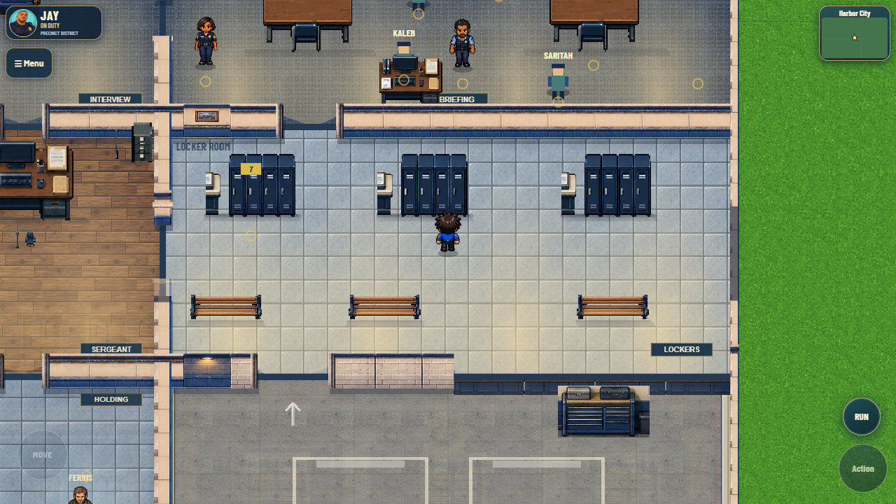
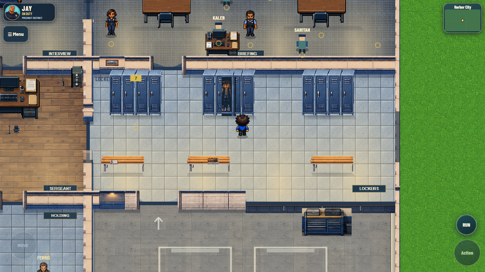
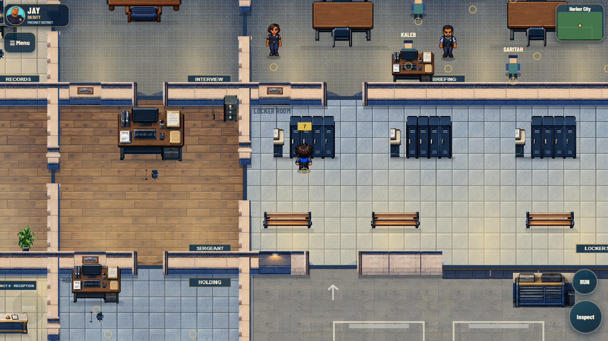
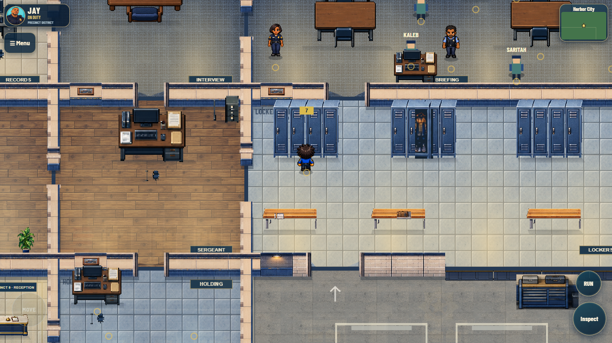
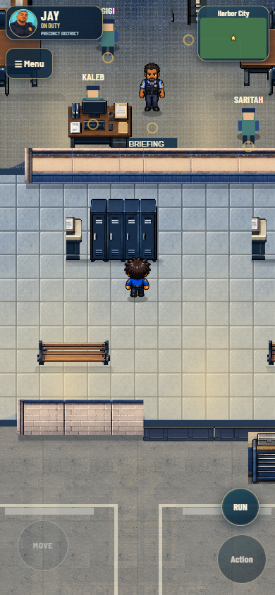
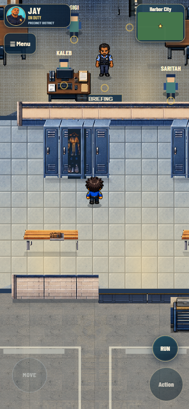
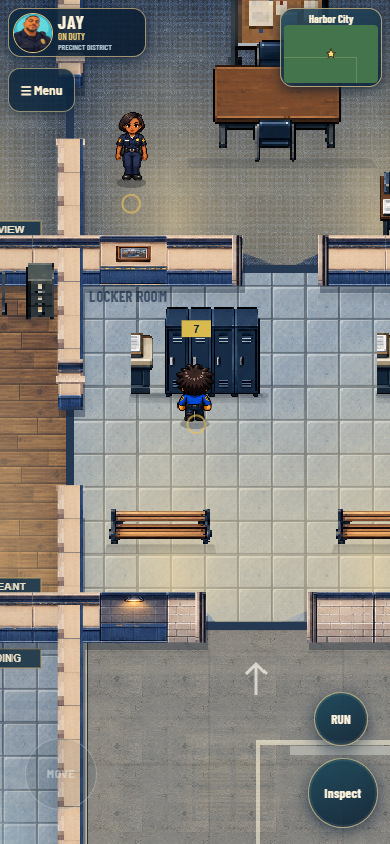
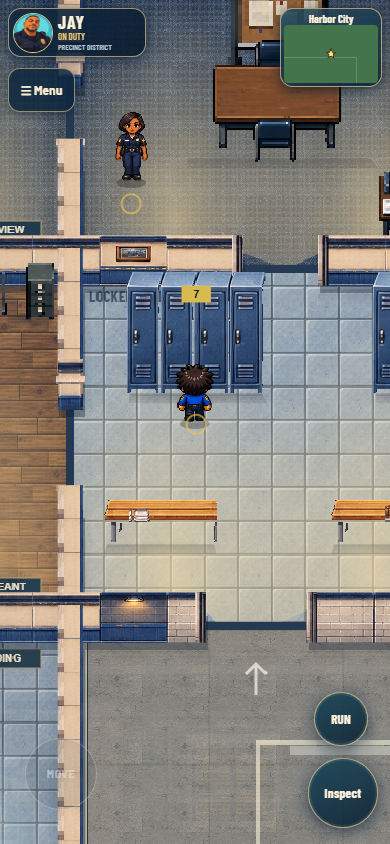

Actual matching-camera gameplay captures. Original layout, walls and colliders are unchanged. Before: commit 7cbd1ea.
Layout, access, depth and performance results · Protected-mode checks · Protected source hashes







